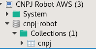
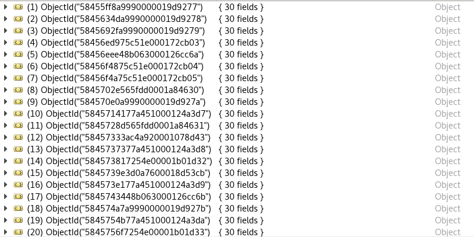
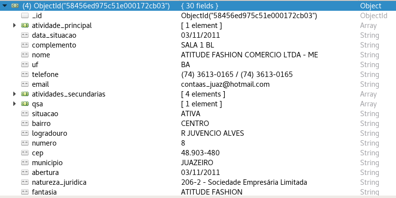
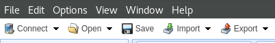
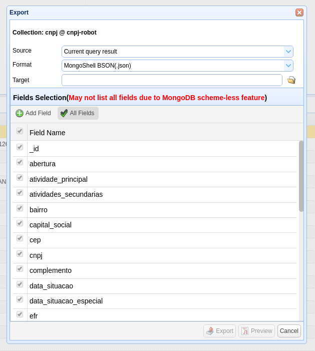
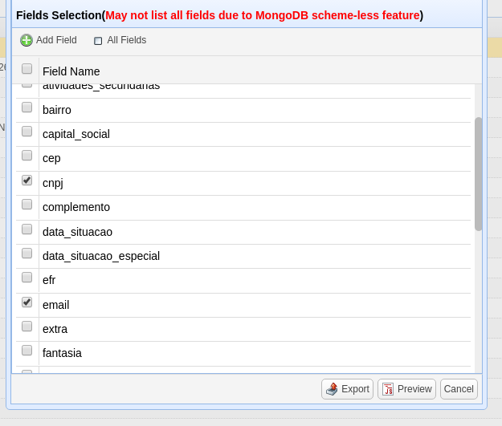
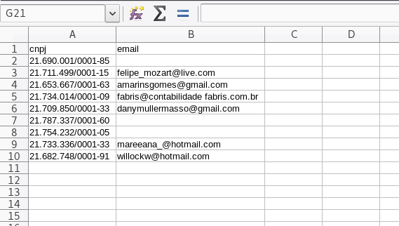

Estava eu, no meu cantinho, fazendo o que eu sei fazer de melhor: caçar bugs. Até que o CTO da empresa que trabalho me fez um pedido muito interessante:
“Explique para o setor de Marketing como eles podem rodar consultas na nossa base de dados em MongoDB.”
Situação perfeita para eu realinhar o meu conhecimento com NoSQL e escrever mais um pouco para este bendito blog.
Contexto
Temos uma base de dados com diversos CNPJs, que contém informações como: atividades, data de registro, razão social, natureza jurídica, etc.
A ideia é que através de alguns snippets o pessoal possa mineirar estes dados.
São bombeiros ou mineiros? Eis a questão.
Então antes de sair espalhando receitas de miojo, gostaria de introduzir a ferramenta com 20% teoria e 80% de prática.
Valeu Pareto! Tamo junto.
O que é MongoDB?
É o software da base de dados que nós usamos. Apesar de usarmos esta solução, existem dezenas, talvez centenas, de outras soluções concorrentes ao MongoDB, com o foco de solucionar o mesmo problema: NoSQL.
O que é NoSQL?
Sempre que falamos de base de dados, temos como referência uma tabela ou uma planilha.
A magia do NoSQL é justamente essa. Ela é totalmente o oposto de uma planilha.
NoSQL é um tipo de base de dados que fornece o armazenamento e recuperação de dados em diversos modelos (chave-valor, grafos ou documentos).
O MongoDB especificamente trabalha com o modelo de Documentos.
Colocando um exemplo prático da coisa:
1 base de dados MongoDB tem:
- Diversas Collections (“tabelas”);
- Dentro das collections, temos os documentos;
- Documentos são a entidade mais básica da base, é o objeto que nós queremos manipular por si só.
Exemplo prático:

Temos a nossa base CNPJ Robot AWS.
Dentro da nossa base, temos a coleção de CNPJs.
Dentro da nossa coleção, temos os nossos documentos:

Dentro destes documentos, temos nossos dados, no formato de chave-valor:

Esta é a nossa estrutura de dados.
Através destes documentos, que nós iremos rodar nossas consultas para identificar somente os documentos que desejamos, semelhante as funções do Excel.
Como acessar a base de dados?
Você irá precisar de um cliente. Existem diversos clientes hoje para MongoDB, mas o que eu recomendo atualmente é o MongoBooster.
Ele está disponível para Windows, Mac e Linux. Você pode baixá-lo aqui.
Existem algumas outras alternativas como o MongoChef.
O importante é que ele tenha uma ferramenta para Exportar dados, que é o mais importante para nós aqui.
Após rodarmos nossas consultas, podemos exportar os dados dela para um CSV.
Após instalá-lo, você vai precisar:
- Endereço IP do banco;
- Usuário;
- Senha.
Para adquirir estas credenciais, solicite o responsável.
Voltando para nossa base de dados, para enxergamos estes dados, precisamos rodar consultas.
O que é uma consulta?
É algo parecido com isto:
db.cnpj.find({})
Basicamente, estamos dizendo ao banco de dados para retornar todos os documentos da coleção de CNPJ.
E se quisesessemos…
Recuperar somente empresas ativas?
db.cnpj.find({"situacao": "ATIVA"})
Como pode ver, a diferença ocorreu dentro das chaves do find.
A chave, é o nome da coluna que você deseja filtrar a informação.
O valor, é o que você deseja pesquisar.
Vamos para outros exemplos.
Recuperar somente empresas ativas do DF?
db.cnpj.find({"situacao": "ATIVA", "uf": "DF"})
Como você pode ver, basta adicionar um novo chave-valor separado por vírgula, para você fazer uma consulta em múltiplas colunas.
Recuperar empresas em uma atividade principal?
Como as empresas podem ter mais de uma atividade principal, a estrutura de dados para este campo, é no formtao de Listas (Array).
Pelo fato de ser uma lista, para nós consultarmos este tipo de dado, precisamos fazer de uma forma um pouco diferente.
Veja o exemplo abaixo:
db.cnpj.find({"atividade_principal.code": "43.30-4-05"})
Basicamente, indicamos a segunda coluna através de um ponto final.
Exemplos:
- atividade_principal.code
- atividade_principal.text
- qsa.qual
- qsa.nome
Recuperar empresas com um capital social MAIOR que X
Para podermos fazer esta consulta em campos que são números, como é o caso do capital social, precisamos usar algumas palavras-chaves.
No caso de uma consulta com empresas ativas que tenham o capital social maior que dez mil reais:
db.cnpj.find({"situacao": "ATIVA", "capital_social": { $gt: "10000.00" } })
Para coisas Maior que X, usamos $gt (greater than). Para saber mais sobre este operador, clique aqui.
Recuperar empresas com um capital social MENOR que X
Mesma lógica que a opção acima, porém usamos uma outra palavra-chave.
Para coisas Menor que X, usamos $lt (less than). Para saber mais sobre este operador, clique aqui.
No caso de uma consulta com empresas ativas que tenham o capital social maior que dez mil reais:
db.cnpj.find({"situacao": "ATIVA", "capital_social": { $gt: "10000.00" } })
Observação
Caso você queira, Maior ou IGUAL/Menor ou IGUAL, você precisa por um e no fim do operador. Sendo assim:
- Maior ou igual a 10.000 reais
{"capital_social": { $gte: "10000.00" } }
- Menor ou igual a 10.000 reais
{"capital_social": { $lte: "10000.00" } }
Recuperar empresas que tenham sido fundadas/abertas/atualizadas em X
Para filtrarmos estas colunas que na verdade são data (dia/mês/ano), vamos precisar usar Expressões Regulares (abreviado como Regex).
Sem aprofundar muito o que são expressões regulares, vamos aos exemplos:
Abertas em 2016
db.cnpj.find({ "abertura": {$regex: /2016/} })
Atualizadas em 2016
db.cnpj.find({ "ultima_atualizacao": {$regex: /2016/} })
Empresas que tiveram a situação atualizada para ATIVA em 2016
db.cnpj.find({ "situacao": "ATIVA", "data_situacao": {$regex: /2016/} })
Empresas abertas em Janeiro de 2015
db.cnpj.find({ "abertura": {$regex: /01\/2015/} })
Como exportar estes dados?
Ok, você já filtrou os dados que queria. E agora, como jogar esta belezinha para uma planilha?
Se você estiver usando o software recomendado (MongoBooster), esta etapa será muito simples.
Siga os passos abaixo:
- Vamos exportar todas as empresas que encontram-se ATIVAS e que foram abertas DESDE 2015 no PARANÁ. A consulta será esta:
db.cnpj.find({ "situacao": "ATIVA", "uf": "PR", "abertura": {$regex: /01\/2015/} })
- Após rodar a consulta, vamos clicar em Export:
 Última opção do print, é a quinta opção do menu
- Depois selecione a primeira opção (Export to JSON, BSON, CSV|TSV and SQL (mongoexport not require)…)
Abrirá uma janela semelhante a esta:

Source
É a origem dos dados. Por padrão será a consulta que você acabou de rodar. Caso queira exportar TODOS os registros da base, basta alterar esta opção para “Entire collection”.
Format
Temos diversos formatos disponíveis. O que nós vamos usá-lo é o CSV (.csv).
Target
É onde o arquivo final deverá ser salvo.
Delimiter
Se você selecionar o CSV, este campo irá aparecer.
Ele é o delimitador das colunas do CSV. Por padrão virá como vírgula.
Abaixo destas opções, temos o Fields Selection.
Aqui você indicará quais as colunas você deseja que apareça no CSV.
Se você quiser filtrar estas colunas, primeiro clique em “All Fields”, para desmarcá-lo.
Após, basta selecionar as colunas desejadas. Exemplo abaixo, exportarei somente o CNPJ e o e-mail:

Depois de você exportar e abrir o CSV, o resultado será semelhante a este:

Conclusão
É uma ferramenta simples e extremamente robusta para nós usarmos no dia-a-dia.
A facilidade em filtrar dados é o fator mais crítico aqui.
Espero que tenham gostado e caso algum tópico não tenha ficado esclarecido, basta solicitar.